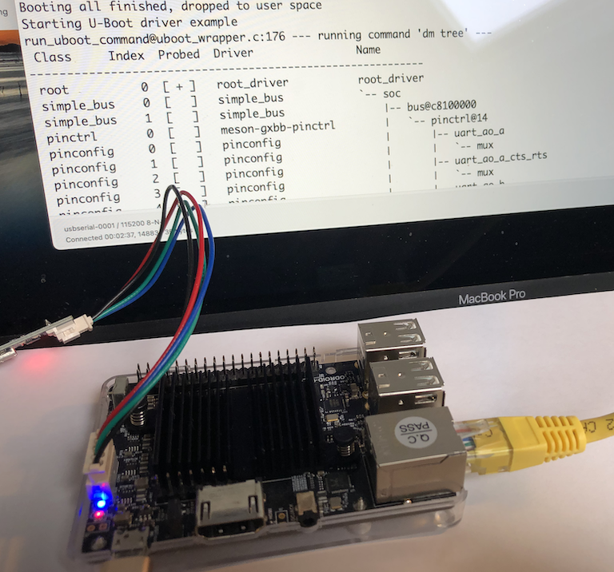

Odroid-C2 Platform - Worked Example
As part of the review of the New Platform section of this guide, we ported the U-Boot Driver Library to build with seL4 on the Odroid-C2 platform for the CAmkES framework.
This document gives details of how this was achieved, following the structure of those earlier sections, but adding details of exact changes to each file.
Our goal is to get the U-Boot test application running on the Odroid-C2.
Repository setup and forks
To work on a new platform build, we need to modify some of the existing repositories. To do that, we need to "fork" those repositores and do the work in our own local branches until it's all working. Finally, we would need to open a "Pull Request" to merge our changes back into the "upstream" repositories.
Additionally, we need to tell the repo tool that we want to build from our
own forked repositories (so that the repo sync step gets the sources from
our forks, not from the upstream repositories).
You'll need to your own GitHub account to do this. From here on, we'll be using the
GitHub account name rod-chapman for our local forks.
-
Using the GitHub web GUI, create your own forks of the
sel4devkit-maaxboard-camkes-manifest,sel4devkit-maaxboard-camkes, andsel4devkit-maaxboard-camkes-projects_libsrepositories. You might want to rename using the board being ported. -
Clone the
sel4devkit-maaxboard-camkes-manifestfork into your local machine, and create a new branch calledaddc2to make our changes. In the following commands, remember to changerod-chapmanto your own GitHub user name:git clone https://github.com/rod-chapman/camkes-manifest.git cd camkes-manifest git checkout -b addc2 git push --set-upstream origin addc2 cd .. -
Similarly, clone the
sel4devkit-maaxboard-camkesand ``sel4devkit-maaxboard-camkes-projects_libs` forks, and add a new branch to each with the same name.git clone https://github.com/rod-chapman/camkes.git cd camkes git checkout -b addc2 git push --set-upstream origin addc2 cd ..git clone https://github.com/rod-chapman/projects_libs.git cd projects_libs git checkout -b addc2 git push --set-upstream origin addc2 cd .. -
Edit the
default.xmlfile in thesel4devkit-maaxboard-camkes-manifestrepository to add a new remote (in our case calledrod) pointing at our own GitHub account.For example, the line to add is
<remote name="rod" fetch="https://github.com/rod-chapman"/> -
Similarly, edit the
default.xmlfile to specify that thesel4devkit-maaxboard-camkesandsel4devkit-maaxboard-camkes-projects_libsrepositories should come from theaddc2branches of our own forked repositories. Find theprojectline for each repository and modify its entry to specify our own remote (rod) and branch (addc2).For example, the
projectlines for our forks are:<project name="sel4devkit-maaxboard-camkes.git" path="projects/camkes" remote="rod" revision="addc2" upstream="addc2" dest-branch="addc2"> <linkfile src="easy-settings.cmake" dest="easy-settings.cmake"/> </project> <project name="sel4devkit-maaxboard-camkes-projects_libs.git" path="projects/projects_libs" remote="rod" revision="addc2" upstream="addc2" dest-branch="addc2"/> -
Commit and push that change:
cd sel4devkit-maaxboard-camkes-manifest git add default.xml git commit -m "Add remote and forked repositories for adding Odroid-C2 platform." git push cd ..
Test Application Build for the MaaxBoard
Having made no other changes at this point, we should be able to build and run the U-Boot Driver Example program for the MaaxBoard from those newly forked repositories, just to make sure that creating the forks hasn't broken anything.
The earlier instructions in the New Platform
section should be followed with one significant change: the first repo init command
specifies our fork and branch of the sel4devkit-maaxboard-camkes-manifest repository.
For example:
repo init -u https://github.com/rod-chapman/sel4devkit-maaxboard-camkes-manifest.git -b addc2
Assuming that works, then we can start to make modifications to support the Odroid-C2.
Root Directory, Platform Name, and basic Platform Details
To build the test application, we need to create a new root directory
to hold a repo structure and perform the build.
The root directory name is c2new. From here on, all directory names given in this section
are relative to that new root directory.
We also know that the Odroid-C2 is already supported by seL4. Its device tree
appears in kernel/tools/dts/odroidc2.dts.
The seL4 "platform name" is odroidc2.
The system-on-chip device at the heart of the C2 is Amlogic S905, also known as a "meson" SoC.
We create that root directory, and initialise our build environment. Remember to use the Docker container from the build environment setup section from here on:
# In the docker container with working directory at /host
mkdir c2new
cd c2new
repo init -u https://github.com/rod-chapman/sel4devkit-maaxboard-camkes-manifest.git -b addc2
repo sync
At this point, we return to the structure of the New Platform section.
Update the library's CMake file to support the platform
We need to update the file projects/projects_libs/libubootdrivers/CMakeLists.txt to
include bare-minimum support for our new platform.
From the seL4 documentation we can find that the value of the ${KernelPlatform}
variable is odroidc2. We also need to locate the correct C header files for this
platform and create a sym-link to them, so we add:
+ elseif("${KernelPlatform}" STREQUAL "odroidc2")
+ # Define the drivers used for this platform
+ set(arch_source "./arch-meson")
+ set(arch_target "../projects/uboot/arch/arm/include/asm/arch")
+ execute_process(COMMAND ln -fsn ${arch_source} ${arch_target})
in the "Platform specific settings" section of the file.
Adding the GPIO Driver
At this point, we decided to add support for the U-Boot "General Purpose IO" device driver, also known as "GPIO".
We start by searching the Odroid-C2 device tree file for the string "gpio-controller" in
the file kernel/tools/dts/odroidc2.dts.
This appears in two places in the Device Tree, with path-names /soc/bus@c8100000/pinctrl@14/bank@14
and /soc/periphs@c8834000/pinctrl@4b0/bank@4b0.
From those nodes of the tree we search "up" the tree (towards the "soc" root node) for a "compatible" string. We find
compatible = "amlogic,meson-gxbb-aobus-pinctrl";
for the former entry, and
compatible = "amlogic,meson-gxbb-periphs-pinctrl";
for the latter.
Finding the driver source code
Those "compatible" strings give us the key to finding the correct source file from the U-Boot sources that we need to support the C2's GPIO device(s).
We can search the sources for all the U-Boot drivers for either of those strings with:
cd projects/uboot/drivers
grep -r "meson-gxbb-.*-pinctrl" .
which yields a result:
./pinctrl/meson/pinctrl-meson-gxbb.c: .compatible = "amlogic,meson-gxbb-periphs-pinctrl",
./pinctrl/meson/pinctrl-meson-gxbb.c: .compatible = "amlogic,meson-gxbb-aobus-pinctrl",
showing us that the single source file pinctrl-meson-gxbb.c implements a
driver that is compatible with both of the devices we're interested in.
At the bottom of that source file, we find the declarations:
static const struct udevice_id meson_gxbb_pinctrl_match[] = {
{
.compatible = "amlogic,meson-gxbb-periphs-pinctrl",
.data = (ulong)&meson_gxbb_periphs_pinctrl_data,
},
{
.compatible = "amlogic,meson-gxbb-aobus-pinctrl",
.data = (ulong)&meson_gxbb_aobus_pinctrl_data,
},
{ /* sentinel */ }
};
U_BOOT_DRIVER(meson_gxbb_pinctrl) = {
.name = "meson-gxbb-pinctrl",
.id = UCLASS_PINCTRL,
.of_match = of_match_ptr(meson_gxbb_pinctrl_match),
.probe = meson_pinctrl_probe,
.priv_auto = sizeof(struct meson_pinctrl),
.ops = &meson_gx_pinctrl_ops,
};
so we know the driver is called "meson-gxbb-pinctrl" and it is compatible with both the "aobus" and "periphs" instances of that device on the C2.
Adding a source dependency for the GPIO driver
Having identified which source file we need to build, we can add it to the CMake file.
Firstly, we set the variable "iomux_driver" to the value we just found - "meson-gxbb-pinctrl" - by adding
elseif("${KernelPlatform}" STREQUAL "odroidc2")
# Define the drivers used for this platform
+ set(iomux_driver "meson-gxbb-pinctrl")
...
in the "Platform Specific Settings" section of the CMakeLists.txt file as above.
In the same file, we then go to the "Settings for IOMUX Drivers" section and add
an elseif branch to add the required source code dependencies when that driver is selected:
elseif(iomux_driver MATCHES "meson-gxbb-pinctrl")
list(APPEND uboot_deps uboot/drivers/pinctrl/meson/pinctrl-meson-gxbb.c)
Resolving Compilation Issues
An attempt to compile the U-Boot Driver Test application fails owing to missing sources, where our new driver code depends on some other code that we have not included yet.
Identification of the missing units (and further searching of the U-Boot driver sources) shows that
we additionally need the pinctrl-meson.c and pinctrl-meson-gx-pmx.c source files to be included, so
we update CMakeLists.txt to include them:
elseif(iomux_driver MATCHES "meson-gxbb-pinctrl")
list(APPEND uboot_deps uboot/drivers/pinctrl/meson/pinctrl-meson-gxbb.c)
list(APPEND uboot_deps uboot/drivers/pinctrl/meson/pinctrl-meson.c)
list(APPEND uboot_deps uboot/drivers/pinctrl/meson/pinctrl-meson-gx-pmx.c)
Platform Specific Linker Lists
Next, we need to add the "Linker Lists" data structures for this platform and for the set of device drivers that we want to support.
First, we create two new directories in our fork of the projects_libs repository:
projects_libs/libubootdrivers/include/plat/odroidc2
and
projects_libs/libubootdrivers/src/plat/odroidc2
Following the templates from the New Platform section,
we create plat_driver_data.h in the former of those directories.
There are five UClass Drivers that are effectively mandatory (nop, root, simple_bus, phy and blk),
and we want to add two more (pinconfig and pinctrl), making a total of 7, so we declare in
plat_driver_data.h:
#define _u_boot_uclass_driver_count 7
/* Define the uclass drivers to be used on this platform */
extern struct uclass_driver _u_boot_uclass_driver__nop;
extern struct uclass_driver _u_boot_uclass_driver__root;
extern struct uclass_driver _u_boot_uclass_driver__simple_bus;
extern struct uclass_driver _u_boot_uclass_driver__phy;
extern struct uclass_driver _u_boot_uclass_driver__blk;
extern struct uclass_driver _u_boot_uclass_driver__pinconfig;
extern struct uclass_driver _u_boot_uclass_driver__pinctrl;
We require a total of 4 drivers, so:
#define _u_boot_driver_count 4
/* Define the drivers to be used on this platform */
extern struct driver _u_boot_driver__root_driver;
extern struct driver _u_boot_driver__simple_bus;
extern struct driver _u_boot_driver__pinconfig_generic;
extern struct driver _u_boot_driver__meson_gxbb_pinctrl;
and 4 commands:
#define _u_boot_cmd_count 4
/* Define the u-boot commands to be used on this platform */
extern struct cmd_tbl _u_boot_cmd__dm;
extern struct cmd_tbl _u_boot_cmd__env;
extern struct cmd_tbl _u_boot_cmd__setenv;
extern struct cmd_tbl _u_boot_cmd__pinmux;
We can now create plat_driver_data.c in the src/plat/odroidc2 directory to initialise
the actual data structures thus:
void initialise_driver_data(void) {
driver_data.uclass_driver_array[0] = _u_boot_uclass_driver__nop;
driver_data.uclass_driver_array[1] = _u_boot_uclass_driver__root;
driver_data.uclass_driver_array[2] = _u_boot_uclass_driver__simple_bus;
driver_data.uclass_driver_array[3] = _u_boot_uclass_driver__phy;
driver_data.uclass_driver_array[4] = _u_boot_uclass_driver__blk;
driver_data.uclass_driver_array[5] = _u_boot_uclass_driver__pinconfig;
driver_data.uclass_driver_array[6] = _u_boot_uclass_driver__pinctrl;
driver_data.driver_array[0] = _u_boot_driver__root_driver;
driver_data.driver_array[1] = _u_boot_driver__simple_bus;
driver_data.driver_array[2] = _u_boot_driver__pinconfig_generic;
driver_data.driver_array[3] = _u_boot_driver__meson_gxbb_pinctrl;
driver_data.cmd_array[0] = _u_boot_cmd__dm;
driver_data.cmd_array[1] = _u_boot_cmd__env;
driver_data.cmd_array[2] = _u_boot_cmd__setenv;
driver_data.cmd_array[3] = _u_boot_cmd__pinmux;
}
Note how the number of assignments and array elements initialised must exactly match
the values of the constants defined in the plat_driver_data.h file.
Add Odroid-C2 support in the U-Boot Driver Example test program
We now need to modify the CAmkES configuration of our test program to tell CAmkES that our program is configured for this platform and our code can have capabilities allocation to access certain devices.
This is done by creating a specific platform_devices.h file for the Odroid-C2 in the example application.
We create camkes/apps/uboot-driver-example/include/plat/odroidc2/platform_devices.h with the following
content:
#pragma once
/* List the set of device tree paths that include the 'reg' entries
* for memory regions that will need to be mapped */
#define BUS_PATH "/soc/bus@c8100000"
#define PERIPHS_PATH "/soc/periphs@c8834000"
#define REG_PATHS { BUS_PATH, PERIPHS_PATH };
#define REG_PATH_COUNT 2
/* List the set of device tree paths for the devices we wish to access.
* Note these need to be the root nodes of each device to be accessed */
#define PINCTRL1_PATH "/soc/bus@c8100000/pinctrl@14"
#define PINCTRL2_PATH "/soc/periphs@c8834000/pinctrl@4b0"
#define DEV_PATHS { PINCTRL1_PATH, PINCTRL2_PATH };
#define DEV_PATH_COUNT 2
/* Provide the hardware settings for CAmkES. Note that we only need to inform
* CAmkES of the devices with memory mapped regions, i.e. the REG_xxx
* devices. See https://docs.sel4.systems/projects/camkes for syntax */
#define HARDWARE_INTERFACES \
consumes Dummy bus; \
consumes Dummy periphs; \
emits Dummy dummy_source;
#define HARDWARE_COMPOSITION \
connection seL4DTBHardware bus_conn(from dummy_source, to bus); \
connection seL4DTBHardware periphs_conn(from dummy_source, to periphs);
#define HARDWARE_CONFIGURATION \
bus.dtb = dtb({ "path" : BUS_PATH }); \
periphs.dtb = dtb({ "path" : PERIPHS_PATH }); \
Refer to the CAmkES tutorial and documentation for the exact syntax and semantics of these declarations.
We also need to update the main test program to enable the specific tests that we want to run
on the Odroid-C2. The source file is in projects/camkes/apps/uboot-driver-example/components/Test/src/test.c.
Each specific test for device XXX is only run if a C preprocessor symbol TEST_XXX is defined. A set of these are defined by testing each appropriate CONFIG_PLAT_YYY symbol that might be defined by CMake. test.c already defines a set of tests are are appropriate for the MaaxBoard, so we need to add a set for the Odroid-C2. At this point, only the pinmux command is implemented, so we add:
/* Determine which functionality to test based upon the platform */
#if defined(CONFIG_PLAT_MAAXBOARD)
...
+ #elif defined(CONFIG_PLAT_ODROIDC2)
+ #define TEST_PINMUX
#else
...
#endif
Compilation
At this point, the U-Boot Driver Example test program should build for the C2.
Make sure all your changes are committed and pushed to GitHub, then (in the Docker container):
cd /host/c2new
repo sync
mkdir build
cd build
../init-build.sh -DCAMKES_APP=uboot-driver-example -DPLATFORM=odroidc2 -DSIMULATION=FALSE
ninja
This should result in a binary image in the images subdirectory that can be copied to a
USB memory stick or a TFTP server of your choice. As before, we assume that the image is renamed
to sel4_image if that is the default set up in your U-Boot configuration.
Running the test application
In our case, we download using TFTP, so we start the TFTP Server Application as before, start CoolTerm,
reboot the Odroid-C2, and hit Return immediately to interrupt whatever default boot
sequence is installed. Then we set the ipaddr and serverip environment variables in
U-Boot, and use the tftpboot sel4_image command to download the image.
On our system, our ethernet subnet is 192.168.2.x and the image is built to
run with a start address of 0x20000000, so the entire
sequence of commands to setup, download and start the test program is:
odroidc2# setenv ipaddr 192.168.2.2
odroidc2# setenv serverip 192.168.2.1
odroidc2# tftpboot sel4_image
odroidc2# go 0x20000000
Test results
Most of the commands that are expected to work on the MaaxBoard
will fail on the Odroid-C2 owing to missing drivers, but the dm tree command
should work and show the pinctrl devices that we have added. The output that we see,
truncated to only show the first 4 levels of the device tree, is as follows:
Starting U-Boot driver example
run_uboot_command@uboot_wrapper.c:176 --- running command 'dm tree' ---
Class Index Probed Driver Name
-----------------------------------------------------------
root 0 [ + ] root_driver root_driver
simple_bus 0 [ ] simple_bus `-- soc
simple_bus 1 [ ] simple_bus |-- bus@c8100000
pinctrl 0 [ ] meson-gxbb-pinctrl | `-- pinctrl@14
pinconfig 0 [ ] pinconfig | |-- uart_ao_a
pinconfig 1 [ ] pinconfig | | `-- mux
pinconfig 2 [ ] pinconfig | |-- # and many more - truncated here
pinconfig 3 [ ] pinconfig | | `-- mux
simple_bus 2 [ ] simple_bus `-- periphs@c8834000
pinctrl 1 [ ] meson-gxbb-pinctrl `-- pinctrl@4b0
pinconfig 40 [ ] pinconfig |-- emmc
pinconfig 41 [ ] pinconfig | `-- mux
pinconfig 42 [ ] pinconfig |-- # and many more - truncated here
pinconfig 43 [ ] pinconfig | `-- mux
run_uboot_command@uboot_wrapper.c:181 --- command 'dm tree' completed with return code 0 ---
Completed U-Boot driver example
Adding support for the LED and GPIO commands
At this point, we can go further and add support for the U-Boot led and gpio commands.
The LEDs are driven by the lower-level GPIO pinctrl and pinmux subsystems, so we look in the Odroid-C2's device tree for the tell-tale "compatible" string for the appropriate driver. We find:
leds {
compatible = "gpio-leds";
blue {
label = "c2:blue:alive";
gpios = < 0x2e 0x0d 0x01 >;
linux,default-trigger = "heartbeat";
default-state = "off";
};
};
This tells is to look for the declaration of a gpio-leds driver in the U-Boot sources. Indeed, in uboot/drivers/led/led_gpio.c, we find:
U_BOOT_DRIVER(led_gpio) = {
.name = "gpio_led",
.id = UCLASS_LED,
.ops = &gpio_led_ops,
.priv_auto = sizeof(struct led_gpio_priv),
.probe = led_gpio_probe,
.remove = led_gpio_remove,
};
static const struct udevice_id led_gpio_ids[] = {
{ .compatible = "gpio-leds" },
{ }
};
U_BOOT_DRIVER(led_gpio_wrap) = {
.name = "gpio_led_wrap",
.id = UCLASS_NOP,
.of_match = led_gpio_ids,
.bind = led_gpio_bind,
};
showing that we need to add the led_gpio and led_gpio_wrap drivers to our build.
In addition, we need to add the general GPIO driver which, for this platform, is called meson_gx_gpio_driver.
In summary, we need to:
- add 2 more UClass Drivers, 3 more Drivers, and 2 more U-Boot commands to the library configuration in
plat_driver_data.h:
#define _u_boot_uclass_driver_count 9 // was 7 previously
#define _u_boot_driver_count 7 // was 4 previously
#define _u_boot_cmd_count 6 // was 4 previously
extern struct uclass_driver _u_boot_uclass_driver__pinconfig;
extern struct uclass_driver _u_boot_uclass_driver__pinctrl;
+ extern struct uclass_driver _u_boot_uclass_driver__gpio;
+ extern struct uclass_driver _u_boot_uclass_driver__led;
extern struct driver _u_boot_driver__pinconfig_generic;
extern struct driver _u_boot_driver__meson_gxbb_pinctrl;
+ extern struct driver _u_boot_driver__meson_gx_gpio_driver;
+ extern struct driver _u_boot_driver__led_gpio_wrap;
+ extern struct driver _u_boot_driver__led_gpio;
extern struct cmd_tbl _u_boot_cmd__pinmux;
+ extern struct cmd_tbl _u_boot_cmd__gpio;
+ extern struct cmd_tbl _u_boot_cmd__led;
- initialise these structures properly in
plat_driver_data.c, adding:
driver_data.uclass_driver_array[5] = _u_boot_uclass_driver__pinconfig;
driver_data.uclass_driver_array[6] = _u_boot_uclass_driver__pinctrl;
+ driver_data.uclass_driver_array[7] = _u_boot_uclass_driver__gpio;
+ driver_data.uclass_driver_array[8] = _u_boot_uclass_driver__led;
driver_data.driver_array[2] = _u_boot_driver__pinconfig_generic;
driver_data.driver_array[3] = _u_boot_driver__meson_gxbb_pinctrl;
+ driver_data.driver_array[4] = _u_boot_driver__meson_gx_gpio_driver;
+ driver_data.driver_array[5] = _u_boot_driver__led_gpio_wrap;
+ driver_data.driver_array[6] = _u_boot_driver__led_gpio;
driver_data.cmd_array[3] = _u_boot_cmd__pinmux;
+ driver_data.cmd_array[4] = _u_boot_cmd__gpio;
+ driver_data.cmd_array[5] = _u_boot_cmd__led;
- modify
CMakeLists.txtto enable those drivers and sources in the CMake build process:
elseif("${KernelPlatform}" STREQUAL "odroidc2")
# Define the drivers used for this platform
set(iomux_driver "meson-gxbb-pinctrl")
+ set(gpio_driver "meson_gx_gpio_driver")
+ set(led_driver "gpio_led")
...
Next, we declare the /leds device tree path in the configuration of the U-Boot Driver Example program in camkes/apps/uboot-driver-example/include/plat/odroidc2/platform_devices.h and add that to the list of DEV_PATHS that are required by our test application:
#define LEDS_PATH "/leds"
#define DEV_PATHS { PINCTRL1_PATH, PINCTRL2_PATH, LEDS_PATH };
#define DEV_PATH_COUNT 3
Finally, the main test program test.c is modified to run tests for the gpio and led commands
#elif defined(CONFIG_PLAT_ODROIDC2)
#define TEST_PINMUX
+ #define TEST_GPIO
+ #define TEST_LED
+ #define TEST_LED_NAME_1 "c2:blue:alive"
+ #define TEST_LED_NAME_2 "c2:blue:alive"
If we run the test program, we first notice the tail of the output of the dm tree command now includes:
gpio 1 [ + ] meson-gx-gpio | `-- meson-gpio
nop 0 [ + ] gpio_led_wrap `-- leds
led 0 [ + ] gpio_led `-- blue
Secondly the led list command produces:
c2:blue:alive off
The pinmux status -a command also works, and lists the current assignment of the general GPIO pins to their current specific function.
Wrapping up
This section has given a detailed walkthrough of how the U-Boot driver framework and test application
have been built and run under seL4 on the Odroid-C2. We've also shown how the basic GPIO "pinctrl"
driver from U-Boot can be added to our configuration for that platform and how the
U-Boot dm tree command works and shows the presence of that device. We then went on to add support for the pinmux and led commands and demonstrated their use in a simple test application.
